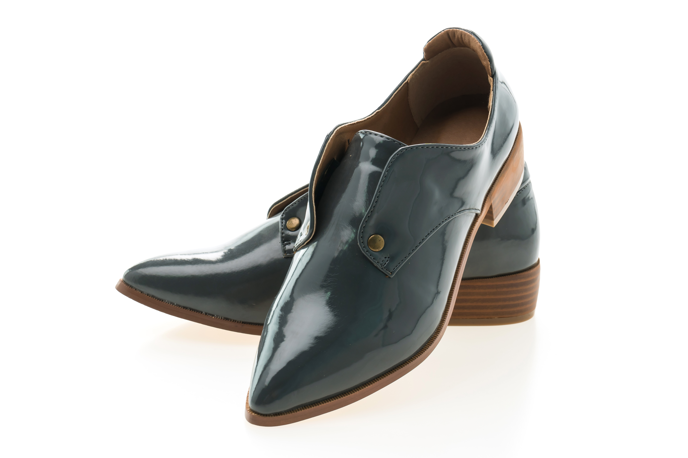

Walk on
History.
Scroll

— The Atelier
Each pair is handcrafted in our Florence atelier by master cordwainers who have devoted their lives to the pursuit of perfection. From the selection of full-grain calf leather to the final hand-burnish, every step is guided by tradition and an obsession with detail.
Our cordwainers spend years mastering each of the 212 individual steps required to construct a single shoe. The result is a product that improves with age — moulding to the foot, deepening in patina, becoming more beautiful with every walk taken.



A shoe is not merely an object — it is the imprint of a man's character upon the earth he walks.
— Henri Vancor, Founder, 1924